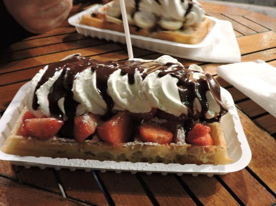

Ricetta della gaufre di Bruxelles
La gaufre di Bruxelles è un morbido dolce dalla forma rettangolare, caratterizzato da profonde e grandi tacche
Viene di solito servita al tavolo e necessita di una posata per essere consumata.
Questo dessert secondo la tradizione viene regalato l’11 Novembre, giorno di San Martino.

Ingredienti:
- 250 g di farina
- 375 ml di latte
- 100 g di burro (fuso)
- 10 g di zucchero
- 15 g di lievito di birra fresco
- 3 uova
- una stecca di vaniglia
- q.b. zucchero a velo
Preparazione:
- scaldare il latte
- mescolare il lievito con un poco di latte caldo e lo zucchero
- separare gli albumi dai tuorli, sbatterli a neve con un mixer elettrico o una frusta
- setacciare la farina e aggiungere il resto del latte caldo, mischiare energeticamente il tutto
- aggiungere i tuorli, il burro fuso e il lievito sciolto, la vaniglia
- coprire l’impasto con un foglio di pellicola e lasciarlo riposare per una mezz’ora in frigorifero
- preriscaldare la cialdiera e spenellare la superficie con del burro
- mettere un mestolo di impasto cospargendolo con un cucchiaio su tutta la superficie e far cuocere la gaufre per circa 3-4 minuti
- decorare con zucchero a velo (o farcire a piacimento)

torna alla home page